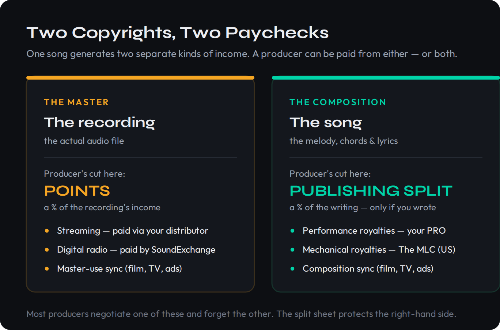
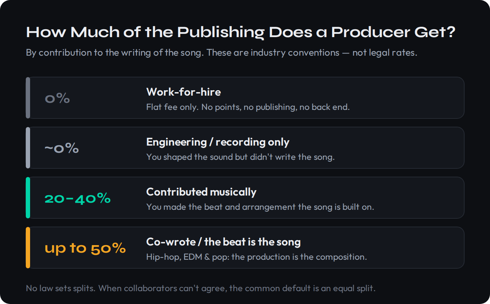
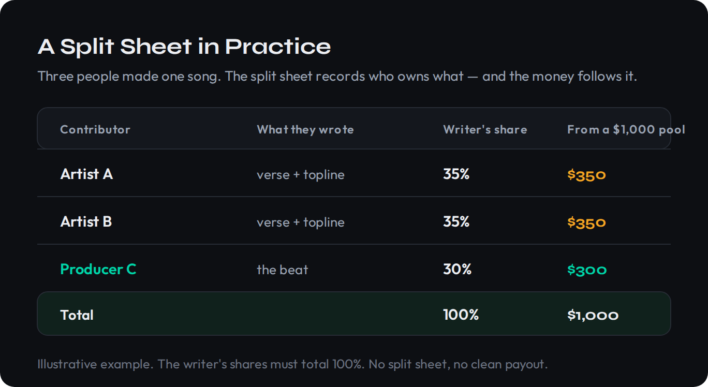

When a producer says they got “three points,” they mean three percent of one specific thing — and it is probably not the only thing they should have negotiated. Producers get paid two separate ways, from two separate copyrights, and most leave half of it on the table because nobody ever explained the difference. One cut is the points on the recording. The other is the publishing split on the song. They are not the same money, they come from different places, and the rules for each are different. This is the plain-English map: what the numbers actually are in 2026, the one document that protects all of it, and how to make sure the money reaches you.
This is general information to help you understand how producers get paid and ask better questions. Every real deal is different, and the percentages here are industry conventions, not statutory rates — there is no law that sets them. Before you sign anything that matters, have a music attorney review it.
A producer can be paid from two copyrights. Master points are a percentage of the recording's income — roughly 3–7 points on a major deal, or 15–25% of net (or a 50/50 split) on an indie one. The publishing split is a percentage of the song's income, and you only get it if you helped write the song — commonly 20–50% when you did, 0% when you only engineered. Points are usually recoupable (slow to pay); publishing flows from the first dollar. The split sheet is the one page that protects the publishing, and a single stream pays you through three different organizations. Miss any of them and you collect a fraction of what you earned.
The Two Ways a Producer Gets Paid
Every recorded song contains two separate pieces of property, and copyright law treats them as two different things owned by two different people. There is the master — the actual recording, the audio file people stream — and there is the composition, the underlying song itself: the melody, the chords, the lyrics. A cover version is the clearest proof that these are separate. Every cover of a song is its own new master recording, but they all share the one original composition. For the full anatomy of both copyrights, our guide to how music royalties work walks the whole tree; here we stay focused on the producer's own cut.
That two-copyright structure is the entire reason producers get paid two ways. Your points are a share of the master — the recording's income. Your publishing split is a share of the composition — the song's income — and crucially, you only earn it if you contributed to writing the song, not merely recording it. The two are independent. You can hold points and no publishing, publishing and no points, both, or neither.

The clearest illustration of how independent these are is a historical one. George Martin produced nearly the entire Beatles catalog — arranging, scoring, shaping the sound that defined the records — yet he received no publishing royalties on those songs, because in the U.S. and U.K. publishing follows whoever wrote the lyrics and melody, and that was Lennon and McCartney. Martin had the producer's role on the master; he did not hold a writer's share of the composition. Today the lines blur the other way: in hip-hop, EDM and pop, the producer often is a primary author of the song, because the beat and the arrangement are the composition. Which side of that line you fall on decides whether you are owed publishing at all.
Points = a share of the recording. Publishing = a share of the song. If you made the track but did not help write it, you may have points and zero publishing. If you co-wrote it, you should have both — and you negotiate them separately.
What “Points” Actually Means
A “point” is simply one percentage point. The confusion is over a percentage of what, and the answer depends on the kind of deal. On a major-label deal, a producer's points are percentage points of the artist's royalty rate — and they are carved out of the artist's share, not added on top of the label's revenue. If an artist is on an 18-point royalty and gives the producer 4 points, those 4 come out of the artist's 18, which means the producer is taking roughly 22% of what the artist actually earns on that recording. Points sound small until you see them as a slice of the artist's slice.
The major-label convention sits in a familiar band. Around 3 points is typical for a newer, developing producer; 4–5 points for a recognizable name; and 5 or more for a genuine superstar. (Some older contracts express the same idea as 3–5% of a record's wholesale or retail price rather than of the artist's rate, but the practical range is the same.) None of these are rules. A producer with a track record and leverage negotiates up; a producer who needs the credit takes less.
An independent or self-released deal works differently, because there is no label royalty to take points of. Here a producer commonly takes 15–25% of the net master royalties — “net” meaning what is left after recording costs, the producer's fee, and other production expenses are paid back. And when the artist has no money to pay an upfront fee at all, the deal often shifts to a 50/50 master split, or even outright shared ownership of the recording. The less cash changes hands at the start, the bigger the backend share the producer can ask for.
It helps to turn points into dollars. Master royalties on streaming run, by 2026 convention, somewhere around $0.003 to $0.005 per stream before fees — call it roughly $3,000 to $5,000 of gross recording income per million streams (illustrative; the real figure swings with listener country and subscription tier). Picture an independent release that earns $4,000 of master royalties and a producer who negotiated 20% of the net. After the distributor's cut and recording costs are settled, the producer's slice of that backend might land near $700 on that one track — and it keeps arriving every quarter the song is streamed, for as long as it is streamed. On a major deal the arithmetic differs but the principle holds: 4 points carved out of an artist's 18-point rate is roughly 22% of whatever that recording pays the artist, so the producer's backend rises and falls with the artist's own. Points are not a fee; they are a small ownership stake in a recording that may pay for decades.
One phrase quietly reshapes that whole calculation: the “all-in” deal. On most major releases the artist's royalty is “all-in,” which means the producer's points come out of the artist's rate and the artist — not the label — pays the producer. That is exactly why points are best read as a slice carved from the artist's slice: in an all-in structure, every point you win is a point the artist loses. It is also why the negotiation is genuinely a negotiation, and why knowing the deal is all-in tells you who you are really bargaining with. Usually it is the artist across the table, not the label behind them.
Master points are almost always recoupable. That means your backend does not start paying until the artist or label has earned back your advance and the recording costs out of royalties. A producer fee is frequently half-recoupable as a rule of thumb — charge $10,000 and roughly $5,000 has to be recouped before your points pay a cent. Publishing, by contrast, is generally not recoupable against your fee and flows from the first dollar. This is the single biggest reason two producers on similar deals see wildly different money: the one who only took points can wait years; the one who also secured publishing is already getting paid.
The Publishing Split (The Part Producers Forget)
Publishing is the money the song earns, and it is the cut producers most often leave behind — partly because the word gets thrown around loosely. “Publishing,” “songwriting” and “composition” all point at the same thing: ownership of the written song and the royalties it generates. If you contributed to that song — you made the beat the track is built on, wrote the chord progression, shaped the topline, built the arrangement — you likely have a claim to a writer's share. If you only recorded, edited or mixed an already-written song, you typically have a fee and no publishing. Our deeper music publishing explainer covers the machinery; what matters here is your slice of it.
How big is that slice? There is no statutory answer, only convention — and the convention scales with how much of the writing you did.

In beat-driven genres the producer who built the instrumental frequently takes 50% of the writer's share, leaving the toplineers and lyricists to divide the other half — because in those records the production effectively is the composition. When collaborators genuinely cannot agree on who contributed what, the most common (and most relationship-preserving) default is the equal split: everyone in the room gets the same share — three people, 33.3% each. This is not just etiquette; under U.S. copyright law, a co-written work with no written agreement defaults to equal division among the authors anyway. An influential producer can break that pattern in the other direction — a Rick Rubin can command a larger share on the strength of his track record — but for most working producers the ladder above is the honest map.
One structural point that quietly costs producers money: publishing royalties split into two halves. The writer's share is paid directly to you as a songwriter. The publisher's share is paid to whoever publishes the song — and if you do not have a publisher, that share is yours too, but only if you register as your own publisher and claim it. Self-published producers own both halves. Producers who never set up the publisher side leave the publisher's share sitting in a pool, unclaimed.
Claiming that publisher's half is not automatic, and the gap is where a lot of producer money evaporates. Your PRO will only pay the publisher's share if there is a publisher registered to receive it, so you either set yourself up as your own publishing entity — most PROs let a songwriter register a publisher name for a small fee — or you hand the job to a publishing administrator such as Songtrust or a distributor's publishing add-on, which registers your songs worldwide and chases the mechanical and performance money you would never track down alone, for a percentage. The principle is the same either way: an unregistered publisher's share does not wait patiently for you. It is divided among everyone who did register and is effectively gone. A producer signed up only as a writer is collecting half of their own publishing.
If a sample is involved, the picture changes again: the writers of the sampled song are owed a piece of the publishing, negotiated during clearance — often anywhere from 15% to 50% depending on how central the sample is. That gets recorded on the split sheet too. Our guide to clearing a sample covers that process; the takeaway for splits is that an uncleared sample is a hole in your publishing waiting to be claimed by someone else.
Work-for-Hire vs Royalties: The Trade-Off
Before any of the percentages matter, there is a more basic fork: are you taking a flat fee, or a back end? A work-for-hire arrangement is a buyout — you do the work, take a flat fee, and hand it over with no points, no publishing and no ongoing royalties. It is clean, immediate, and final. A royalty deal trades some or all of that upfront cash for a stake in whatever the song earns for the rest of its life. Neither is “better” in the abstract; they fit different situations.
| Work-for-hire (flat fee) | Points + publishing | |
|---|---|---|
| Money now | All of it, upfront | Little or none |
| Money later | None | A share of everything the song earns |
| Ownership | You keep nothing | You hold a stake in master and/or song |
| Risk | Zero — paid regardless of success | You win only if the song does |
| Paperwork | One simple agreement | Split sheet + producer agreement + registrations |
| Best when | You need cash, it’s a one-off, artist is unproven | You contributed creatively and believe in the song |
The honest framing is that work-for-hire is a bet against the song — you are guaranteed your fee whether it flops or explodes — while points and publishing are a bet on it. Remixers usually live entirely on the work-for-hire side: a remix is typically a flat buyout, no publishing on the new version, no master points, just a fee. The danger is doing the work of a co-writer and accepting the pay of a hired hand. A “flat beat sale” that quietly transfers all the publishing is the most common way working producers give away the most valuable thing they made. Read what you sign — our walkthrough on how to read a music contract and the producer contract guide exist for exactly this moment.
Knowing what the trade looks like on paper matters as much as knowing the percentages. The phrase to watch is “work made for hire”: in a contract it means the person paying is treated as the legal author and owner of what you make, full stop. Pair it with an assignment of all rights “in perpetuity throughout the universe” — standard boilerplate — and a flat fee, and you have signed away every future royalty the work will ever earn. None of that is sinister; it is precisely the right deal for a genuine one-off. It becomes a problem only when the work was creatively a co-write and the paper still says hired hand. If a contract calls a beat you built from nothing a work-for-hire and offers a single payment, that is the moment to decide — on purpose, not by accident — whether you are selling the song or just renting out your afternoon.
The Split Sheet: Your One-Page Insurance
Everything on the publishing side rests on one document, and it is almost comically simple: a split sheet. It is a single page, signed by everyone who contributed to writing the song, that records each person's percentage of the composition. It covers the publishing only — not the master, not your producer fee, both of which are separate agreements. Each contributor's writer's share is listed and must total 100%, and so does each contributor's publisher's share. If you wrote and self-publish, you hold both halves at your percentage.
The split sheet is not the copyright itself, and it is not a registration. It is the evidence that everything else is built on — the agreed truth you carry to your PRO and The MLC when you register the song. Sign it the day the song is finished, before it is distributed anywhere. The reason is brutal: the day a song unexpectedly takes off is the single worst day to start negotiating who owns it, because now there is real money on the table and every memory has conveniently improved. A signed split sheet settles it before there is anything to fight over.
Make the split sheet a reflex, not a special occasion. Free, industry-standard templates are published by ASCAP, BMI, Songtrust and TuneCore; pick one and reuse it. E-signature tools (DocuSign, and similar) are now the norm, so “we were never in the same room” is no longer an excuse. The cost of doing one is five minutes. The cost of skipping one is frozen royalties and a friendship-ending argument when the song works.
What goes on it is straightforward: the song title and date, every writer's legal name, the role and specific contribution of each (beat, topline, lyrics, melody), the percentage each owns of the writer's and publisher's shares, each writer's PRO and IPI/CAE number, a note of any samples used, and every signature. Miss a contributor — even someone who tossed out the one melodic line that made the hook — and you have created exactly the dispute the sheet exists to prevent. And miss a single IPI number and the registration can stall at the PRO before a cent is paid, because the collection societies match money to people by those numbers, not by names. The sheet is only as good as the details on it.
A Real Example, From Beat to Payout
Numbers make this concrete. Say three people make a song: Artist A and Artist B each write a verse and trade off the topline, and Producer C builds the beat the whole thing rides on. They sit down, agree that C's production is central enough to earn a real writer's share, and put it on a split sheet: A 35%, B 35%, C 30% of the writer's share. That is the entire negotiation, and it took the length of one coffee.

Now the song earns. Suppose it generates $1,000 in publishing over some period — performance royalties from radio and streaming, mechanical royalties from streams and downloads. Because the split sheet exists and the percentages were registered, that pool divides automatically: A receives $350, B receives $350, and Producer C receives $300. No argument, no frozen account, no lawyer. That $300 is publishing C would have earned nothing of under a flat beat sale.
The master side runs on a separate track. The recording's streaming income flows to whoever owns the master — here, presumably the artists who released it — and if Producer C negotiated, say, master points or a share of the recording, that comes out of that pool, not the publishing one. Two copyrights, two pools, two payouts.
Put both pools together and Producer C's whole position comes into focus. On the composition, C holds 30% and collects $300 of that $1,000 publishing pool, arriving as performance royalties through C's PRO and mechanicals through The MLC. On the recording, if C also negotiated 20% of the net master royalties, then a separate $4,000 of streaming income on the same track pays C roughly $800 more after costs (illustrative). One song, two independent payouts, about $1,100 to the producer — against the single flat fee C would otherwise have taken, with nothing after. Multiply that across a catalog of songs that keep streaming and the difference between a producer who set up both cuts and one who took the buyout stops being a rounding error. It becomes the whole career. The sequence to get there is short:
- Agree the splits the day the song is done. Before it leaves the room, settle each person's writer's-share percentage and write it on the sheet.
- Sign it. Every contributor signs — e-signature is fine. Now it is evidence, not a memory.
- Register the song. Each writer enters their agreed percentages with their PRO, and the song is registered with The MLC for mechanicals.
- Distribute the master. Whoever owns the recording uploads it through a distributor; that handles the master royalty.
- Collect from every source. Performance royalties come from the PRO, mechanicals from The MLC, master streaming from the distributor — each pays its share against the registered splits.
How to Actually Collect (The Part Nobody Set Up)
Here is the fact that quietly costs independent producers and artists the most money: a single U.S. stream pays you three different ways, through three different organizations, and most people are only signed up with one of them. Knowing your percentages is useless if the money has nowhere to land.
For one on-demand stream on Spotify or Apple Music, three separate royalties are generated. The master royalty (the recording) is paid to whoever distributed it — your distributor, the DistroKid / TuneCore / CD Baby line. That is the payment most people think of as “streaming income.” The mechanical royalty (the composition) is paid in the U.S. by The MLC, the Mechanical Licensing Collective, created by the Music Modernization Act and operating since 2021. And the performance royalty (also the composition) is paid by your PRO — ASCAP, BMI or SESAC. Three organizations, three payments, one stream.
…you are collecting roughly one-third of what your music actually generates. Registering with The MLC is free and takes about ten minutes, and the mechanical royalties it collects typically add 15–25% on top of what your distributor pays you — money that otherwise sits unmatched in a pool. The PRO captures the performance half. Neither one knows you exist until you register.
There is a fourth source on the master side that producers especially overlook: SoundExchange, which collects digital-performance royalties when your recording plays on non-interactive services like Pandora, SiriusXM and internet radio. It pays the featured performers, the non-featured performers, and the owner of the master. A producer who is entitled to a share of the master but is not listed on the registration can be routed their cut through a Letter of Direction (LOD) — a short instruction the rights holder files telling SoundExchange to pay you directly. The same mechanism handles producer royalties in plenty of other backend situations: the LOD is how a behind-the-scenes contributor gets paid without being on the paperwork.
There is one more place worth naming because it pays both of a producer's cuts at once, and pays better than almost anything else: sync licensing — music placed in film, TV, games and advertising. A single placement generates two separate fees from the same use. The master-use license pays whoever owns the recording, so your points apply to it; the sync license pays whoever owns the composition, so your publishing split applies to it. One placement, two checks, both flowing along the exact ownership lines you negotiated at the start. It is the clearest argument for holding a real stake on both sides rather than taking a flat buyout: a producer with points and publishing collects twice from a single sync, while a work-for-hire producer collects nothing from it at all.
So the real collection checklist for a producer who is owed both points and publishing looks like this:
- Join a PRO (ASCAP, BMI or SESAC) as both a writer and a publisher, and register every song with your splits. This collects your performance royalties.
- Register with The MLC at the member portal — free, about ten minutes — to collect your U.S. mechanical royalties on the composition.
- Confirm your distributor is paying the master royalty to the right owner, and that your producer share is accounted for in that arrangement.
- Register with SoundExchange for digital-performance royalties on the master, and file a Letter of Direction wherever you are owed a share but are not on the original registration.
- Enter your split-sheet percentages everywhere. A registration with the wrong (or missing) splits is how royalties end up frozen or paid to the wrong person.
If you have never set any of this up, our step-by-step on how to register your music covers the mechanics end to end.
Negotiating Your Points (Without Killing the Deal)
The biggest mistake in a producer negotiation is treating it as one number. It is two: the fee (cash now) and the back end (points plus publishing). Negotiate them as separate asks, because they trade against each other — a bigger fee usually means a smaller back end, and an artist with no cash will often give up more of the back end instead. Decide which you actually need before you sit down.
The one thing not to give away cheaply is the publishing, because it is the share that pays from the first dollar and is not recoupable against your fee. It is tempting to trade publishing for a slightly larger upfront fee; on a song that works, that is almost always the wrong trade. Protect the publishing first, then negotiate the fee and the points around it. Our guide to negotiating a publishing deal goes deeper on the leverage points.
In practice the asks that move a deal are specific and few. Name a points figure for the master and defend it with your track record, not the artist's optimism. Separately, name a publishing percentage that matches what you actually wrote, and get it onto the split sheet the same day. Ask whether the fee is recoupable and how much — a fully-recoupable fee is really an advance against your own backend, not extra money. And settle the boring mechanical questions while everyone is still friendly: who registers the song, who files the Letter of Direction if you are owed master royalties you are not on the paperwork for, and who is responsible for clearing any sample before release. A producer who raises these calmly at the start reads as a professional; one who raises them after the song charts reads as a problem. The paperwork, handled early, is the leverage.
Your leverage is real and worth naming honestly: your catalog and reputation, the artist's reach and whether a label is involved, how much of the song you actually created, and whether you are fronting the recording costs. The more of the creative and financial risk you carry, the larger the share you can reasonably ask for. And whatever you agree, get it in writing before the session, not after the song is finished — the same logic as the split sheet. A deal made before anyone knows whether the song is a hit is a fair deal; a deal made after is a fight. For more on building income across all of this, see how to make money with music production.
Put It Into Practice
Reading about splits changes nothing until you run the numbers on your own work. Do these three in order.
- Download a free split-sheet template from ASCAP, BMI, Songtrust or TuneCore.
- Pick a real song you collaborated on and list every contributor and exactly what they wrote.
- Assign each person a writer’s-share percentage that totals 100%, and fill in the publisher’s share too. Notice how hard (or easy) it is to do now — and imagine doing it after the song made money.
- Take a split of your choosing — say 40% / 35% / 25% across three writers.
- A song earns $5,000 in publishing. Calculate each writer’s dollar amount ($2,000 / $1,750 / $1,250).
- Now split each writer’s amount into the writer’s share and the publisher’s share, and identify which producers in your circle are currently not claiming their publisher’s half.
- Take a beat you sold (or would sell) for a flat fee. Write down that fee.
- Now rebuild the same deal as a back-end deal: what producer points would you ask for on the master, and what publishing percentage on the composition, given how much of the song the beat represents?
- List the leverage you’d use to justify each number, and the collection steps (PRO, MLC, SoundExchange, LOD) you’d need to actually get paid. This is the negotiation you want to be ready for next time.
Frequently Asked Questions
Producer points are a producer’s backend royalty on the master recording — a percentage of the income the recording earns. One point means one percentage point. On a major-label deal the points are percentage points of the artist’s royalty rate and are deducted from the artist’s share, not taken from the label’s total revenue. They are separate from any publishing the producer earns on the composition, and they are usually recoupable, meaning they only start paying once the producer’s advance and the recording costs have been earned back.
On a major-label deal the convention is roughly 3 to 7 points: about 3 for a developing producer, 4 to 5 for a recognizable name, and 5 or more for a superstar. On an independent or self-released deal the structure is different — producers often take 15 to 25 percent of the net master royalties, or, if there is no upfront fee, a 50/50 master split or outright co-ownership. These are industry conventions, not legal rates; there is no law that sets them.
Only if they contributed to writing the song. Publishing follows the composition — the melody, chords and lyrics. A producer who made the beat, the chords or the arrangement the song is built on usually has a claim to a writer’s share; a producer who only engineered or recorded an already-written song typically gets a fee and no publishing. Where a producer does write, the share is commonly 20 to 40 percent, up to about 50 percent in beat-driven genres, with an equal split among everyone in the room as a frequent default.
They come from the two separate copyrights in every recorded song. Master points are a share of the recording’s income — streaming via your distributor, digital radio via SoundExchange, and master-use sync. The publishing split is a share of the composition’s income — performance royalties via your PRO and mechanical royalties via The MLC. They are independent: you can have one without the other. Producers conflate them constantly, and that is how money gets left behind.
It depends on what you need and what you believe about the song. Work-for-hire is a flat fee with no points, no publishing and no ongoing royalties — clean, immediate cash with no future stake. Points plus publishing means less or no money upfront in exchange for a share of whatever the song earns over its life. Take the fee when you need cash now, it’s a one-off, or the artist is unproven; take the back end when you contributed creatively and believe the song or the artist has reach.
A split sheet is a one-page agreement, signed by everyone who helped write a song, that records each person’s percentage of the composition. It covers publishing only, not the master or the producer fee. You need one for every collaboration because without it US copyright law defaults co-written work to an equal split, and a PRO or label can freeze royalties during a dispute. Sign it the day the song is finished — the day it blows up is the worst time to negotiate. Free templates are available from ASCAP, BMI, Songtrust and TuneCore.
A single US stream pays three ways through three organizations: the master royalty comes from your distributor (DistroKid, TuneCore, CD Baby), the mechanical royalty on the composition comes from The MLC, and the performance royalty on the composition comes from your PRO (ASCAP, BMI or SESAC). If you are only registered with your distributor you are collecting roughly a third of what the stream generates. SoundExchange separately pays digital-performance royalties on the master from services like Pandora and SiriusXM, and a producer who is not on the registration can be routed their share through a Letter of Direction.
Usually not. Master points are typically recoupable, which means the producer’s backend does not start until the advance and the recording costs have been earned back from royalties — the producer fee is often half-recoupable. Publishing, by contrast, generally is not recoupable against the producer fee and flows from the first dollar. That difference is why a producer who took only points can wait a long time to see money while a producer who also secured publishing is already getting paid.